書くべき5つの項目をそろえ、書いてはいけない情報を入れずにプロフィールを仕上げる。
お客様は商品を選ぶ前に、必ずプロフィールを見て「この人に頼んで大丈夫かな」と確かめます。書くべきことが抜けていると不安にさせてしまい、書いてはいけないことを書くと規約違反にもなります。
プロフィールに書くこと
STEP 1で作ったのは、ひとまずの文章でした。ここで作るのは、マイページの「プロフィール編集」にある、お店全体の自己紹介です。
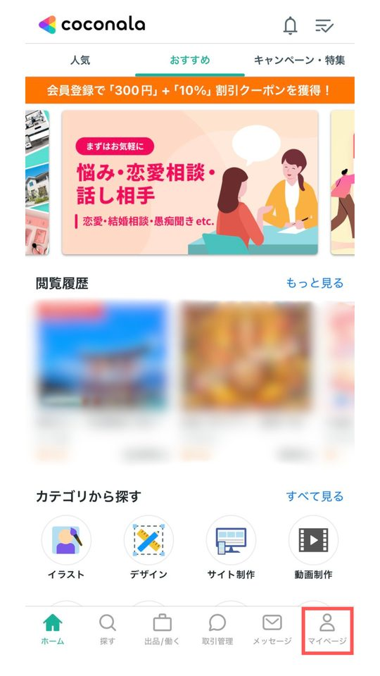
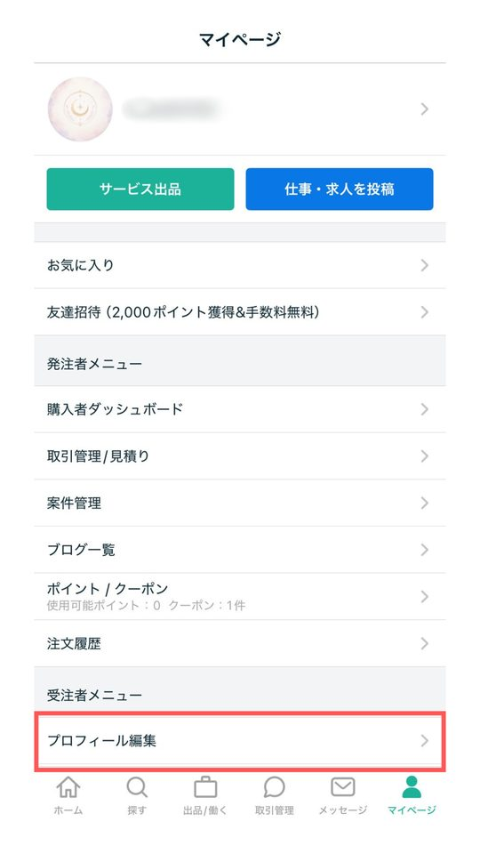
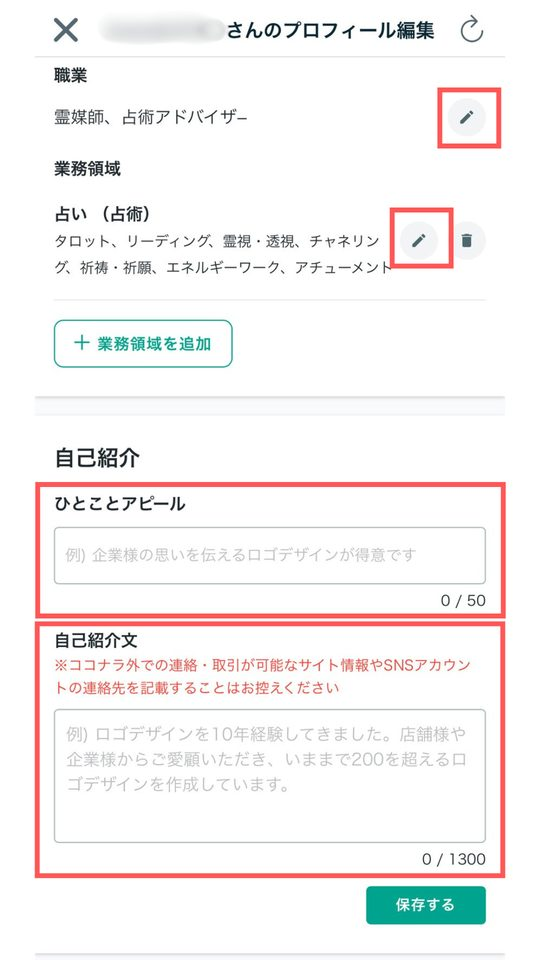
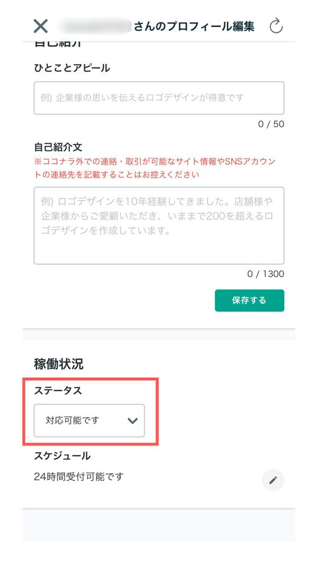
画像を押すと大きく表示されます。横にスクロールできます。
必ず書く5つの項目
- 自己紹介：最大1,300字。ただし一覧では最初の100字くらいしか表示されないので、強みや実績は最初の100字に入れます。実績は「経験○年」より「対応件数」「リピート率」など、数えられる数字で書きます。
- 屋号・職業：本名や本業を出さずに、信頼感のある名前で活動します（下の「用語」も見てください）。
- 業務領域：扱う占術と得意な相談、それから「扱わないこと」もはっきり書きます。
- 稼働状況：対応できる時間帯と、お返事までのおおよその時間。
- 価格の目安：出品している商品ごとの価格帯。STEP 4で作る入口・ミドル・バックの価格帯を並べます。
書いてはいけないこと
次の情報は、信頼にはつながらず、身バレや規約違反のリスクだけが増えます。
- 本名のフルネームや、勤務先が分かる情報
- 住んでいる場所が分かる背景が写った写真
- LINE・InstagramなどSNSへの誘導
- 医療・法律の助言に見える、言い切りの表現
用語
- 屋号
- お店の名前のことです。個人でも自由に名乗れます。例：「占いサロン○○」
- リピート率
- 一度頼んでくれたお客様が、また頼んでくれる割合です。高いほど満足してもらえている証拠になります。
- 業務領域
- 自分が受ける相談の範囲です。「恋愛専門」「仕事の悩み中心」のように絞ると、お客様が選びやすくなります。
プロフィール画像とカバー画像
| 画像 | サイズの目安 | 気をつけること |
|---|---|---|
| プロフィール画像 | 正方形 | 丸く切り抜かれて表示されるので、四隅は切れる前提で、大事なものは真ん中に置きます |
| カバー画像 | 1280×420px | プロフィールページの一番上に出る横長の画像です |
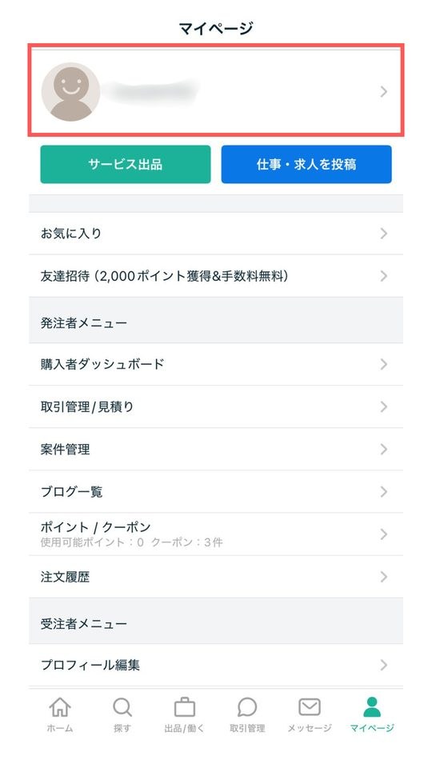
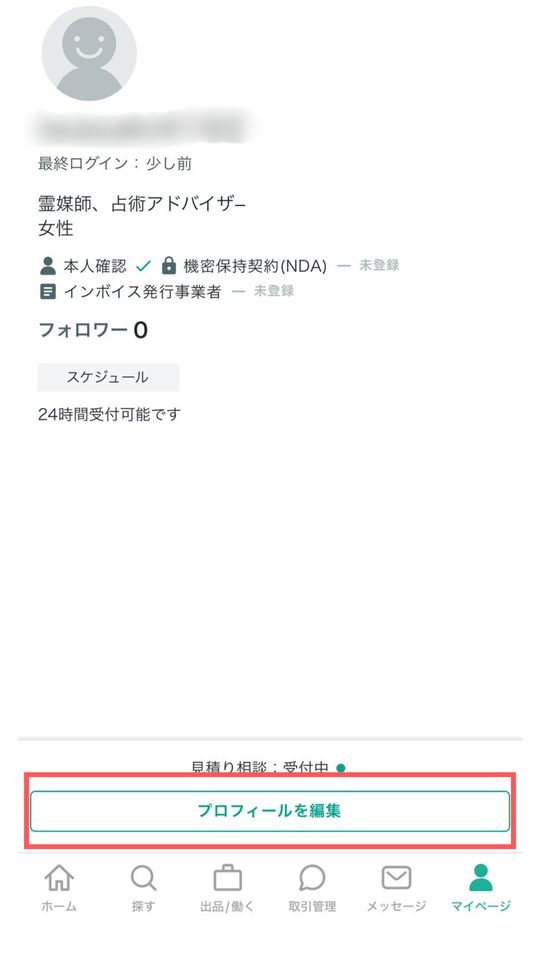
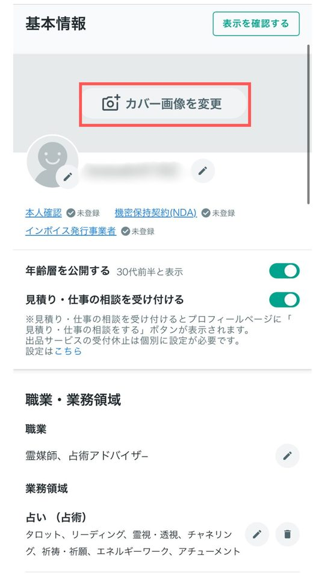
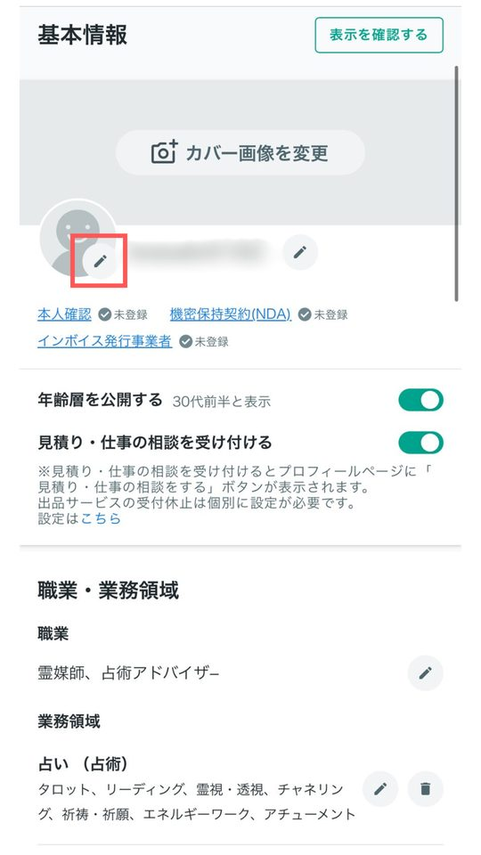
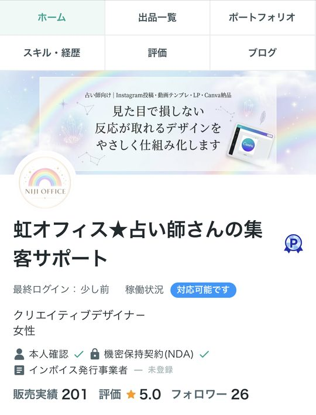
顔を出さない場合は、ChatGPTなどで背景のイラストを作れます。
ココナラのプロフィール画像用の背景イラストを作ってください。 【条件】 ・正方形（1:1）の比率 ・中央に円形のロゴやシンボル（タロットカードの絵柄、月と星など）を1つだけ配置し、シンプルにする ・四隅は丸抜き表示で切れる前提なので、重要な要素は中央70%以内に収める ・実在の人物は描かない、清潔感のある優しい配色（パステル系や白を基調）
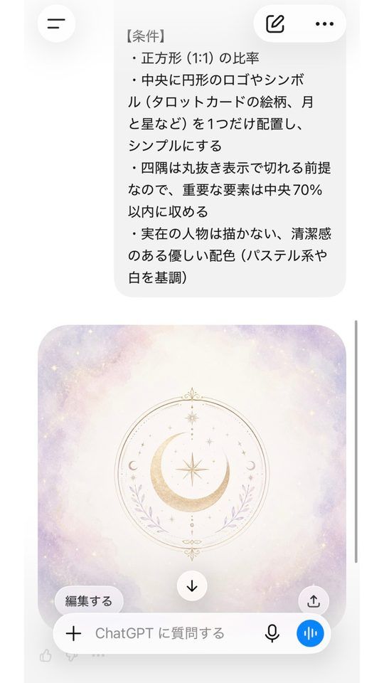
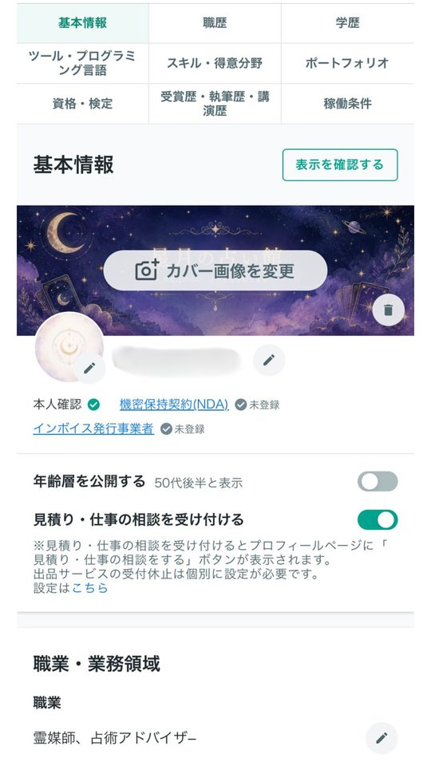
カバー画像も、同じように作れます。お店の雰囲気がひと目で伝わる横長の画像にしましょう。
ココナラのプロフィールページに使う、カバー画像を作ってください。 【条件】 ・横長（1280×420px、約3:1の比率） ・占術：（例：タロット） ・お店の雰囲気：（例：やさしく寄り添う／神秘的／和風） ・使いたい色：（例：ラベンダーと白） ・入れたい文字：（例：屋号「○○」と「恋愛の悩みに寄り添うタロット」） ・文字は大きく読みやすく、日本語が崩れないようにする ・スマホでは左右や上下が少し切れることがあるので、文字や大事なものは中央に寄せる ・実在の人物は描かない
文字が崩れていたら、「○○の文字が崩れているので、正しく書き直して」と伝えて作り直してもらいましょう。
AIで作った「実写のような別人の顔」を、自分の顔として使うのはやめましょう。顔を出すなら本人の写真を使うか、写真をもとに軽くイラスト風にする程度にします。
AIで自己紹介を仕上げる
必ず書く5つの項目を入れて送ると、自己紹介・業務領域・価格の目安をまとめて作ってくれます。STEP 2で書いた「お店をひとことで言うと」も、ここで使えます。
あなたはココナラの占いカテゴリのプロフィール作成が得意なライターです。 以下の情報から「自己紹介」「業務領域」「予算目安」の3つを作成してください。 【条件】 ・自己紹介は最大1300字までだが、一覧では冒頭100字しか表示されないため、最初の100字に実績・強みを集約し、残りで詳細を補足する構成にする。実績は数字（対応件数・リピート率など）で表現する ・断定的な表現（絶対、必ず、100%など）は使わない ・医療・法律行為を想起させる言葉は使わない ・連絡先や外部SNSへの言及は一切入れない ・本名のフルネームや勤務先が特定できる情報は入れない 【入力情報】 ・屋号：（例：占いサロン○○） ・お店をひとことで言うと： ・扱う占術：（例：タロット、西洋占星術） ・対応件数・リピート率など測れる実績：（数字があれば記入、なければ「現在実績を積んでいます」で代用） ・業務領域（得意な相談内容／対応しない内容）： ・稼働状況（対応可能時間・回答目安）： ・出品物ごとの価格帯：
できた文章は、書いてはいけないことが入っていないか、必ず自分の目で確認してから保存してください。
宿題
一覧で表示される部分です。ここだけで「この人に頼みたい」と思えるか読み返しましょう
ここに書いた内容は、このブラウザの中だけに保存されます。